Üç adımda oyuna gir
Sunucu offline moddadır: hem premium hem crack hesaplar girebilir. Kaynak paketi sunucu otomatik indirir, ekstra kurulum gerekmez.
Sunucuya bağlan
Çok oyunculu menüsünden 91.98.80.233:25678 adresiyle gir. 1.16 ile 1.21.x arası her sürüm desteklenir.
Hesabını kaydet
İlk girişte /register sifre sifre yaz. Sonraki girişlerde /login sifre. Şifreni kimseyle paylaşma.
Sınıfını seç
/sinif menüsünden sınıfını seç ve başlangıç setini al. Seçim 24 saatte bir yenilenir, eşyaların silinmez.
💰 100 ₺ başlangıç
Ekonomiye hazır başla, oyuncu marketlerinde harca.
🏠 3 ev hakkı
/sethome ile işaretle, /home ile dön.
⚰️ Ölüm koruması
Ölünce eşyaların mezarda bekler, kimse çalamaz.
🛡️ Arazi koruması
Altın kürekle alan claimle, /trust ile arkadaş ekle.
Beş sınıf, beş oyun tarzı
/sinif menüsünden seç. Her sınıf kalıcı bir pasif efekt ve temalı bir başlangıç seti verir. /karakter menüsünden bilgilerini görebilirsin.
Savaşçı
Yakın dövüş · TankDemir zırh ve kalkanla cephenin ortasına dalır.
- Set
- Demir zırh (full), kalkan, "Savaşçının Kılıcı" (Keskinlik II), 16 biftek
- Malzeme
- Bileme Taşı + Sağlam İp (Gezgin Kılıcı'nı kendin döv)
- Pasif
- Direnç I (kalıcı, %20 daha az hasar)
Okçu
Menzil · HareketlilikMesafeden vurur, zincir zırhla hafif kalır.
- Set
- Zincir zırh (full), "Avcı Yayı", 64 ok, 16 biftek, Kaşif Botları
- Pasif
- Hız I (kalıcı)
Büyücü
Ateş · Gece görüşüAlev asası ve kadim alevle karanlıkta yanmadan dolaşır.
- Set
- Deri zırh (full), "Kadim Alev" (blaze rod), "Alev Asa" (Alevden Çehre I), 16 altın havuç
- Malzeme
- Ametist Mercek (Şafak setinin anahtarı)
- Pasif
- Ateş Direnci + Gece Görüşü (kalıcı)
Suikastçı
Çevik · BaskınGölgenin dişi ve Kaşif Bıçağı ile gece avlanır.
- Set
- Deri zırh (full), "Gölge Hançeri" (demir kılıç), Kaşif Bıçağı, Kaşif Tozlukları, 16 biftek
- Pasif
- Gece Görüşü + Yüksek Sıçrama (kalıcı)
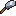
Madenci
Kaynak · 3x3 kazıMadenci Çekici ile tek vuruşta 3x3 blok kırar, fırınıyla yerinde eritir.
- Set
- Demir zırh (full), "Usta Kazması", Madenci Çekici, fırın, 32 meşale, 16 kömür, 16 biftek
- Malzeme
- Bileme Taşı
- Pasif
- Acele + Gece Görüşü (kalıcı)
Beş özel ekin
Çapalanmış toprağa ekilir, 4 aşamada büyür. Olgun ekini kırınca 1-3 ürün ve 1-2 tohum düşer; olgunlaşmadan kırarsan yalnızca tohumunu geri alırsın. Büyümek için ışık seviyesi 9 ister, kemik tozu çalışır.
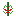
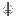
Tohum nereden bulunur
- Çim kırdığında rastgele düşer
- Ürünü craft masasına koy: 2 tohum
- Balık tutarken ve zindan sandıklarında
Çiftçi Tırpanı
- Demir çapa + Sağlam İp ile dönüştürülür
- Ekin hasadında ana alet
- +5 saldırı hasarı bonusu
Yaşam kalitesi
- Eğilerek kaz: tüm damarı tek seferde (VeinMiner)
- Ağacı alt bloktan kes: tamamı düşer, fidan otomatik ekilir
- Madenci Çekici: 3x3 alan kazısı
Yemekler sadece doyurmaz
Her pişmiş yemek geçici efektler verir: madene inmeden Acele, savaştan önce Güç, uzun yolda Hız. Doğru yemek doğru işin yarısıdır.
| Yemek | Doygunluk | Nadirlik | Efektler |
|---|---|---|---|
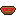 Domates Çorbası | 6 | common | Rejenerasyon I (10sn) + Doygunluk II |
| Pizza Dilimi | 8 | uncommon | Doygunluk III + Acele I (30sn) |
| Elmalı Turta | 8 | uncommon | Rejenerasyon II (15sn) |
| Meyve Salatası | 7 | common | Hız I + Yüksek Sıçrama I (30sn) |
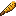 Közlenmiş Mısır | 7 | uncommon | Acele II (45sn) + Hız I (20sn) |
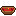 Biber Yahnisi | 7 | uncommon | Ateş Direnci I (60sn) + Güç I (20sn) |
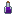 Üzüm Suyu | 5 | uncommon | Hız I (30sn) + Rejenerasyon II (5sn) + Doygunluk |
| Çilekli Turta | 7 | uncommon | Ekstra Can II (60sn) + Rejenerasyon I (5sn) + Doygunluk |
Malzemeden efsaneye
Üç ara malzeme tüm ilerlemeyi birbirine bağlar: Bileme Taşı, Sağlam İp ve Ametist Mercek. Şafak Çekirdeği ise yalnızca güçlü canavarlardan düşer.
Silah zinciri
Her silah bir öncekinden dönüştürülür. Zinciri atlamanın yolu yok: çekirdek, mercek ve bileme hep aynı kapıdan geçer.
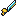
Madenci Çekici
uncommonDönüştürme: Demir Kazma + Demir Blok. Tek vuruşta 3x3 alan kazır. Madenci sınıfının imza aleti.
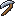
Çiftçi Tırpanı
uncommonDönüştürme: Demir Çapa + Sağlam İp. Ekin hasadının ana aleti, +5 saldırı hasarı verir.
Dört parçayı tamamla, bonusu kap
Her setin dört parçasını birden giydiğinde set bonusu otomatik aktifleşir. Bonuslar karakter ekranında görünür, parça çıkarınca kaybolur.
Çiftçi Seti uncommon
Deri + Buğday ile craftlanır. Toprağı işleyene bereket.
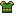
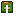
Kaşif Seti rare
Demir + Zincir (+ Sağlam İp) ile craftlanır. Yolda kalan kazanır.
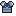
Şafak Seti epic
Elmas + Ametist Mercek (+ Şafak Çekirdeği göğüslükte). Sunucunun zirvesi.
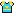
Paranın geçtiği yer: /demirci
Marketten kazandığın parayla malzeme, yemek ve zırh satın al. Şafak Kılıcı yükseltmesi de burada: kılıcını ve çekirdeğini ver, 1500 ₺ karşılığı Şafak Kılıcı'nı al.
| Kategori | Ürün | Fiyat |
|---|---|---|
| Malzeme | Sağlam İp | 75 ₺ |
| Bileme Taşı | 100 ₺ | |
| Ametist Mercek | 400 ₺ | |
| Şafak Çekirdeği | 5.000 ₺ | |
| Yemek | Pizza Dilimi | 100 ₺ |
| Üzüm Suyu | 120 ₺ | |
| Közlenmiş Mısır | 150 ₺ | |
| Biber Yahnisi | 150 ₺ | |
| Çilekli Turta | 180 ₺ | |
| Zırh (parça) | Çiftçi seti | 500 ₺ |
| Kaşif seti | 800 ₺ | |
| Şafak seti | 1.500 ₺ | |
| Yükseltme | Şafak Kılıcı (Gezgin Kılıcı + Çekirdek teslim edilir) | 1.500 ₺ |
13 beceri dalı, alet kalitesine göre XP
ValhallaMMO her işi ayrı beceriyle takip eder: maden kaz, ağaç kes, balık tut, iksir kaynat. Seviye atlarken beceri puanı kazanır, pasiflerin güçlenir.
Alet seviyesi XP çarpanı
Elindeki aletin malzemesi, topladığın beceri XP'sini doğrudan çarpar. Netherite kazma elle kazmaktan iki kat değerli.
| Alet Malzemesi | XP Çarpanı | Örnek |
|---|---|---|
| Elle (aletsiz) | ×0.85 | Yumrukla toprak kazmak |
| Tahta | ×0.90 | Tahta kazma |
| Taş | ×1.00 | Taş balta |
| Altın | ×1.00 | Altın çapa |
| Demir | ×1.15 | Demir kazma |
| Elmas | ×1.40 | Elmas kazma |
| Netherite | ×1.70 | Netherite kazma |
Bilmen gereken her komut
Sunucuya özel menüler üstte, genel survival komutları altta.
| Kategori | Komut | Ne yapar |
|---|---|---|
| Menüler | /sinif | Sınıf seçimi ve başlangıç seti |
| /karakter | Karakter özeti ve sınıf yenileme | |
| /demirci | Malzeme/yemek/zırh marketi ve silah yükseltme | |
| Hesap | /register <şifre> <şifre> | İlk girişte hesap kaydı |
| /login <şifre> | Giriş yap | |
| Işınlanma | /sethome · /home | Ev kur ve dön (en fazla 3) |
| /spawn | Doğuş noktasına dön | |
| /tpa <oyuncu> | Işınlanma isteği gönder | |
| /back | Ölüm/ışınlanma öncesi konuma dön | |
| Ekonomi | /balance | Parana bak |
| /pay <oyuncu> <miktar> | Para gönder | |
| /balancetop | En zenginler sıralaması | |
| Sosyal | /party <oyuncu> | Parti kur, XP ve sohbet paylaş |
| /skin <isim> | Skin değiştir (crack dostu) | |
| /trust <oyuncu> | Claimine arkadaş ekle | |
| /afk | AFK moduna geç | |
| Eğlence | /sit · /lay · /crawl | Otur, uzan, emekle |
| /veinminer toggle | Damar kazısını aç/kapat | |
| /skills | Beceri seviyelerine bak |
Sunucu kuralları
Herkesin keyfi için basit ve net. Kural ihlali uyarı, geçici yasak veya kalıcı yasakla sonuçlanır.
- Hile ve hack yasak. X-ray, killaura, fly, otomatik tıklayıcı dahil her türlü istemci hilesi kalıcı yasak sebebidir. GrimAC aktif izler.
- Grief yasak. Başkasının yapısını kırma, değiştirme, çalma. Claimlenmemiş alanlar da sahipli sayılır.
- Hırsızlık yasak. Kilitlenmemiş sandık bulsan bile içinden izinsiz eşya alma.
- Hakaret, ırkçılık, ayrımcılık yasak. Sohbette ve tabela/isimlerde.
- Reklam yasak. Başka sunucu adı, IP'si veya daveti paylaşma.
- Bug suistimali yasak. Bulduğun hatayı yetkiliye bildir, kopyalamak için kullanma. Kullananın eşyaları silinir.
- Lag makinesi ve devasa redstone saatleri yasak. Sunucu performansı hepimizin.
- Spawn çevresi kutsal. Spawn bölgesine yapı inşa etme, sandık koyma, hayvan biriktirme.
- Çoklu hesapla kural aşmak yasak. Yasaklı oyuncunun alternatifi tespit edilirse ikisi de uzatılır.
- Son karar yetkilinindir. İtirazın varsa kavgayla değil, özelden kanıtla gel.
Sık sorulan sorular
Hangi sürümlerle girebilirim?
Crack (korsan) hesabım var, girebilir miyim?
/register şifre şifre ile hesabını kendine kilitle. Şifren olmadan kimse senin adınla giremez.Kaynak paketini elle kurmam gerekiyor mu?
Özel tohumları nereden bulurum?
Ekini erken kırarsam ne olur?
Sınıfımı değiştirebilir miyim?
/sinif menüsü 24 saatte bir yeni set verir. Sınıf değiştirmek mevcut eşyalarını silmez; sadece yeni sınıfın setini ve pasifini alırsın. Pasif efektleri menüdeki iksir butonlarıyla bedavaya tazeleyebilirsin.Şafak Çekirdeği nasıl bulunur?
Set bonusu neden çalışmıyor?
/skills ve karakter ekranından kontrol edebilirsin.Ölünce eşyalarım ne oluyor?
/back ile de dönebilirsin.Evimi nasıl korurum?
/trust ile arkadaşlarına yetki ver, /containertrust ile sadece sandık erişimi aç.